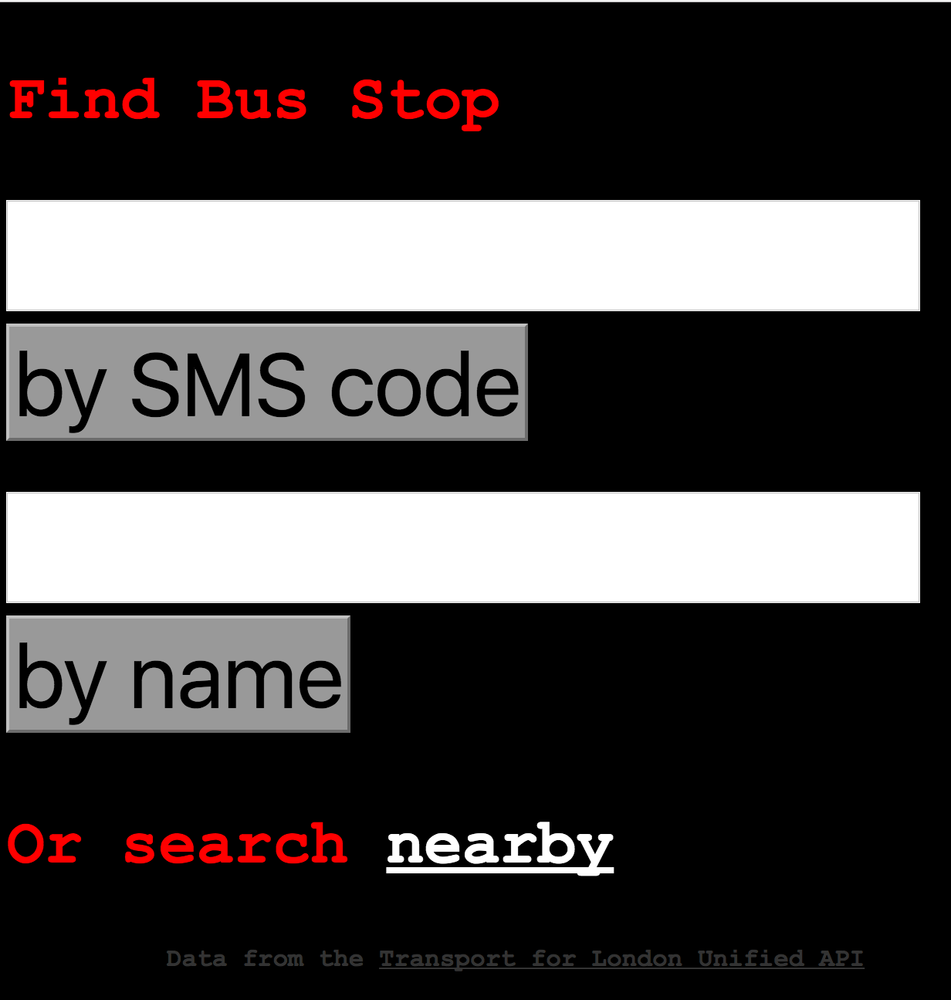

github: https://github.com/digitalronin
Blog: https://digitalronin.github.io/
Profile
I am a developer, technical architect and devops engineer. I have extensive and wide-ranging experience building and maintaining performant, reliable and highly-scalable systems using a large variety of technologies. I have built, led and managed teams of developers and worked in two successful startups, including one of my own.
Skills
Programming Languages
-
Ruby
I have been working primarily in Ruby since 2005, both in Rails applications and also using it with a variety of other frameworks, as well as standalone applications.
-
Elixir
I started using Elixir in production systems in October 2015, rewriting the core of the Admoda ad-serving code from a PHP monolith to a multi-application Elixir system built on top of the Plug library.
-
JavaScript
It is impossible to write or maintain any significantly-complex web application these days, without using JavaScript. Admoda was no exception, making heavy use of JavaScript for interactivity. This became even more true when we undertook a significant rewrite, replacing much of the ‘JQuery-style’ JS code with React.js components.
-
Bash Scripting
The ubiquity of bash on Unix systems makes it a good choice for implementing quick pieces of ‘glue’ code, to combine existing components. A lot of people underestimate bash scripting, but it is possible to write elegant and maintainable code in bash.
-
PHP
When we created Admoda in 2006, we used an existing, open-source PHP ad-serving script as our initial starting point. So, I have been working with PHP since then. It‘s not a language I would choose to work in, but it is useful to be able to dig into legacy code.
Frameworks
-
Ruby on Rails
I have built and maintained many applications in all versions of Ruby on Rails since version 2. The customer-facing web application at the heart of Admoda started as a Rails 2 application, and I developed, maintained, and upgraded it several times. By March 2016 it was a Rails 4.2 application using React.js components, built using Google‘s Material Design principles.
-
Padrino / Sinatra / Rack
For simple web endpoints, when Rails is overkill, these are the libraries I use to get things up and running quickly.
-
Phoenix
I‘ve been using Phoenix in production since October 2015, and really enjoying it. It provides almost all the developer benefits of Rails, without compromising performance or introducing too much ‘magic’.
-
React.js
In May 2015 we started replacing the ‘JQuery-style’ JavaScript code in the Admoda web application with React.js components. Encapsulating in a single JSX file both the behaviour of a component and the layout on which it operates made the application a lot easier to maintain and develop.
-
Ember.js
I started teaching myself Ember.js in April 2016, purely for my own interest. I wouldn‘t say I‘m capable of developing a significant application in it, yet, but I could work on an existing application, if required.
DevOps Tools
-
Unix System Administration
I have been using Linux (mostly Ubuntu) in one form or another since 2001. I am very comfortable with the unix command-line, and administering and maintaining unix servers, both for development and production purposes.
-
Puppet
Since 2010, I‘ve been using Puppet as the primary configuration management tool for Admoda, building and managing a wide variety of server types. Configuration management gave us a lot of flexibility, enabling machines to be replaced or upgraded very quickly, and keeping our infrastructure nimble.
-
Ansible & Chef
Although I‘ve used these a lot less, I like the lightweight ‘push’ nature of Ansible. I tend to use it for my own projects, and I might consider using it, instead of Puppet, for a large project, depending on the requirements. I have played with Chef, but haven‘t used it in production.
-
Docker
I‘ve been using Docker since the end of 2014, when I converted Admoda adservers from Ubuntu VMs running several different software services to a collection of Docker containers, each exposing a single service. I think it can offer a lot, when used appropriately, although there are still some gotchas to avoid.
Cloud Platforms
-
Amazon Web Services
The Ministry of Justice uses AWS extensively, so I have been using it since starting to work there. I wouldn‘t describe myself as expert, but I can find my way around.
-
Google Compute Engine
We moved virtually all of our infrastructure to GCE in May/June 2015, taking advantage of several unique features including live migration, pre-emptible VMs, and Google Container Registry for our Docker images.
-
Google BigQuery
Admoda generated around 1TB of transaction data every day. We used Google BigQuery to analyse this data and expose summary information for our customers in a best-in-class analytics tool, to help advertisers target their campaigns, and publishers to get the best value from their mobile traffic.
-
Heroku
I started using Heroku when doing some contract programming for 38 degrees, a UK non-profit campaigning organisation. I don‘t have a lot of experience with it, but I like what I‘ve seen, so far. I think it‘s an excellent choice when you want to keep your devops workload to a minimum, and if hosting costs are not significant.
-
Rackspace
We used Rackspace as our primary hosting provider until May 2015.
Experience
2016 – present Technical Architect at the Ministry of Justice
Working as part of multi-disciplinary, agile teams, I worked on a variety of projects including Appeal to the Tax Tribunal, taking the service through to public beta.
I designed and helped to implement an architecture based on loosely-coupled services intended to be drop-in components that other services can use (e.g. a virus-scanning file-uploader).
I also helped to create a design pattern for Ruby on Rails, applicable to any forms-based service that needs to classify users based on their path through a flowchart (aka a decision-tree).
A more developed version of this design underpins the Appeal to the Tax Tribunal service.
I also participated in discussions and research on potential uses for distributed ledger technology, both within the Ministry of Justice, and in working groups with a broader government perspective.
2006 – 2016 CTO & Co-Founder of Admoda
We created Admoda in 2006, and were the second mobile ad network to launch (we thought we were the first, but Admob beat us by a week). Admoda was a self-serve system which enabled owners of applications and websites to earn money from their mobile traffic by showing ads. Advertisers registered pre-pay accounts on the system, and then created and managed ad campaigns using our online tools to upload and manage their creative assets, and control the targeting of their campaigns (country, mobile network, device manufacturer, operating system, etc.)
We were up and running within three months of the initial decision to launch, and were profitable within another three. We continued to be profitable for the next ten years. Initially, I worked on the system in my spare time, gradually transitioning to working on it full-time by early 2009.
The front-end was a Ruby on Rails application that went through various incarnations, including a major rewrite to incorporate React.js with a complete re-skin to use Material Design.
The back end initially consisted of servers running an open source PHP ad-serving script, which I had modified to add mobile device detection and targeting capabilities. By the time we wound up the business, the back end was a cloud-hosted auto-scaling “farm” of stateless adservers, each of which comprised a number of loosely-coupled micro-services (geo-location, device recognition, ad selection, etc.), with each service running in its own Docker container. The primary core of the system was written in Elixir, with RabbitMQ as the messaging backbone, with everything orchestrated via a Consul service discovery cluster.
At busy times, there would be hundreds of adservers, scaling down to just a handful at quiet periods. The system was highly resilient, with no single points of failure, and was very closely monitored by several different services. This enabled us to keep hosting and system administration costs to a minimum, yet still handle billions of transactions per day, and millions of pounds of turnover, with a team of just three people (that‘s the whole company, not just the technical team).
2005 – 2009 Technical Architect at Mobile Interactive Group
I was the fourth person, and the first technical hire, at this startup. I helped build and lead the development team, designing, creating and managing a wide variety of applications around different mobile customer experiences (such as voting, ticketing, mobile payments and customer rewards systems), handling traffic loads up to several million transactions per hour.
We worked in Perl initially, but quickly transitioned to Ruby in 2006, using Rails for our front-end applications.
Amongst other projects, I worked on the voting application used for TV shows such as The X Factor, the SMS ticket lottery for the Live8 charity concert, and a loyalty rewards programme for customers of the Orange mobile phone network.
By the time I left, in 2009, the company had grown to 100+ staff, with twelve in the technical team.
2001 – 2005 Developer at O2 UK
Working mostly in Perl but also using some Python, I created and maintained a wide variety of applications for O2 as part of their in-house development team. In particular, I designed and built the first SMS voting system for interactive TV shows including “I‘m a Celebrity, Get Me Out Of Here”, Big Brother and Pop Idol.
Open Source
All my open-source repositories can be seen on my github page.
-
mysql-slaver gem
A ruby gem to simplify the process of setting up replication between MySQL database servers.
-
ip-ranges gem
A ruby gem which enables comparison of two ranges of IP numbers to see if (and how) one overlaps/contains/is equal to the other.
Side Projects
-
Ticket Poker
A zero sign-up tool to facilitate Planning Poker for remote or partially-remote teams.
-
Blockfolio
An Ember + Elixir/Phoenix application to track the value of a cryptocurrency portfolio, in real-time.
-
London Bus Arrivals
A lightweight interface to the realtime bus information made available by TFL.
This is an update to an earlier project. My version accomodates changes to the API which broke the original, and also adds a mobile-friendly UI.
Teaching & Presenting
I‘ve been a regular attendee at the London Ruby User Group since 2006, and an occasional presenter. My most recent presentations were on rewriting software in September 2016;
https://digitalronin.github.io/2016/09/24/total-rewrite-presentation-lrug.html
and Elixir, in March 2016;
https://digitalronin.github.io/2016/03/25/elixir-presentation-lrug.html
When time permits, I mentor developers learning Ruby on Rails at “Women Who Code” events in London;
Qualifications
Upper Second B.Sc. in Computer Science & Electronic Engineering from University College, London.
Hobbies
Aerial Circus skills
I started learning aerial circus skills about five years ago, and got instantly hooked. My first aerial discipline was Static Trapeze, and I later moved on to Rope and Chinese Pole.
Others
- Kitesurfing
- Snowboarding
- Kayaking
- Scuba-diving
- Languages (I speak passable Japanese, French and Spanish, and I‘m learning German, Italian and Russian).
References available upon request.